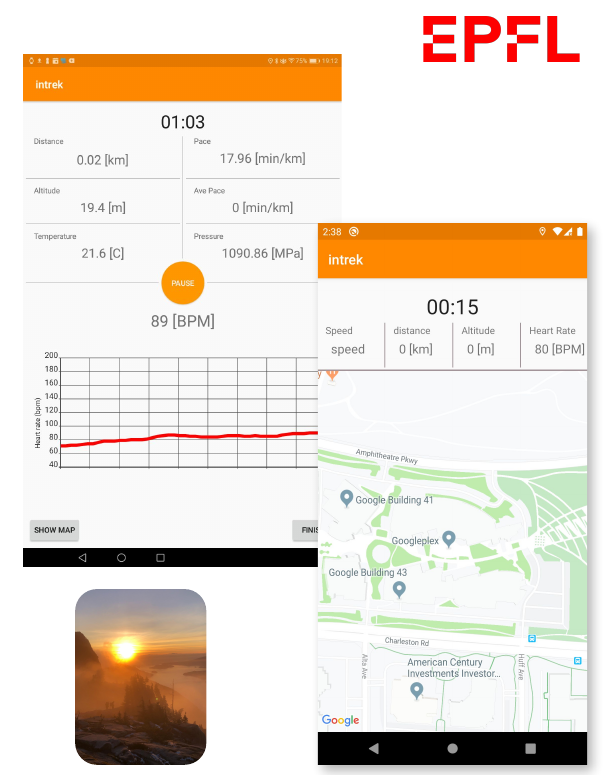

InTrek, a Strava-like multi-sport application
This project was done for a course at EPFL. In a team of 3 students, we developed an mobile app over Android to be your 'hiking partner'.

The app featured a connection with a smart-watch to record data such as chocs or average acceleration. It also used GPS data to compute speeds or distances. Here are some layouts from the user experience !
